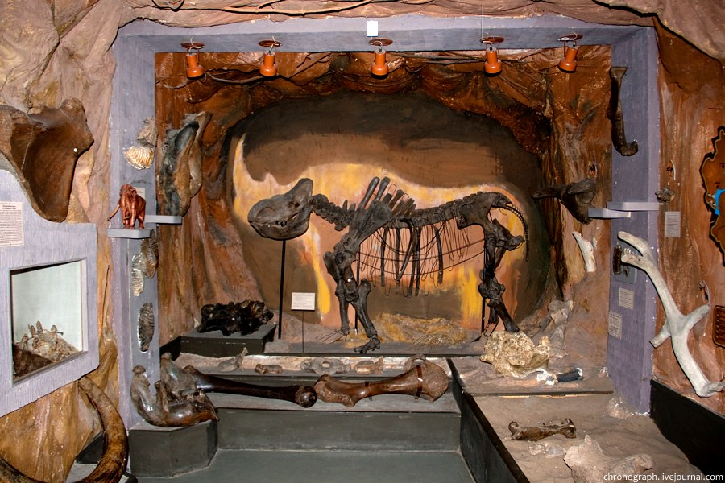

Бункер был построен во время Великой Отечественной войны, в обстановке строжайшей секретности. Планировалось, что он станет местом эвакуации правительства и самого Сталина, но в итоге всё сложилось по-другому: Иосиф Виссарионович в нём так и не побывал. Однако раз строили для Сталина, то бункер носит гордое имя отца народов. О посещении надо договариваться заранее: желающих побывать здесь стабильно много, даже в будний день и в несезон. Для посещения придётся позвонить по телефону, указанному на официальном сайте, и забронировать себе место в экскурсионной группе. Купить билет через интернет, увы, нельзя. Но никаких ужасов, о которых довелось читать в предыдущих отзывах (не берут трубку, невозможно попасть, не работают), не наблюдалось: трубку взяли, работали по графику, указанному на сайте, даже место в группе нашлось. Так что в нашем случае к организации посещений претензий нет. Осматривают бункер только с экскурсией, но по её завершению можно ещё походить и пофотографировать. Рассказ очень интересный и информативный, скучно не будет. В ходе экскурсии вас проведут по лестнице на самый нижний этаж, где располагаются зал заседаний и кабинет Сталина, расскажут об истории Куйбышева-Самары в годы войны, о строительстве и устройстве бункера. В конце можно повторить свой путь по лестнице, а можно и подняться на лифте, так что даже для пожилых людей место вполне доступно.


Самарский областной историко-краеведческий музей имени П.В. Алабина является одним из старейших музеев Поволжья. Музей и его филиалы располагаются в нескольких зданиях в историческом центре города: в бывшем Самарском филиале Центрального музея В.И.Ленина, особняке Александры Курлиной (Музей Модерна), мемориальных музеях В.И. Ленина и М.В. Фрунзе. Многолетний опыт работы и богатые музейные коллекции позволяют музею реализовывать самые необычные проекты и задавать вектор культурного развития городского пространства.
